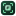

正式图标按真实 CSS 像素绘制（不是推断）
左：16 / 24 / 32 / 64 px。右：16px 的 8 倍邻近放大。下面三枚是 16px 专用简化候选。
16px
24px
32px
64px

16px qlmanage 栅格 ×8
16px 专用候选（SVG 按 16×16 实绘，右侧 CSS scale(8)）
四角 + 方，无 F（推荐 16px 变体）
只留 F 方块
只留四角